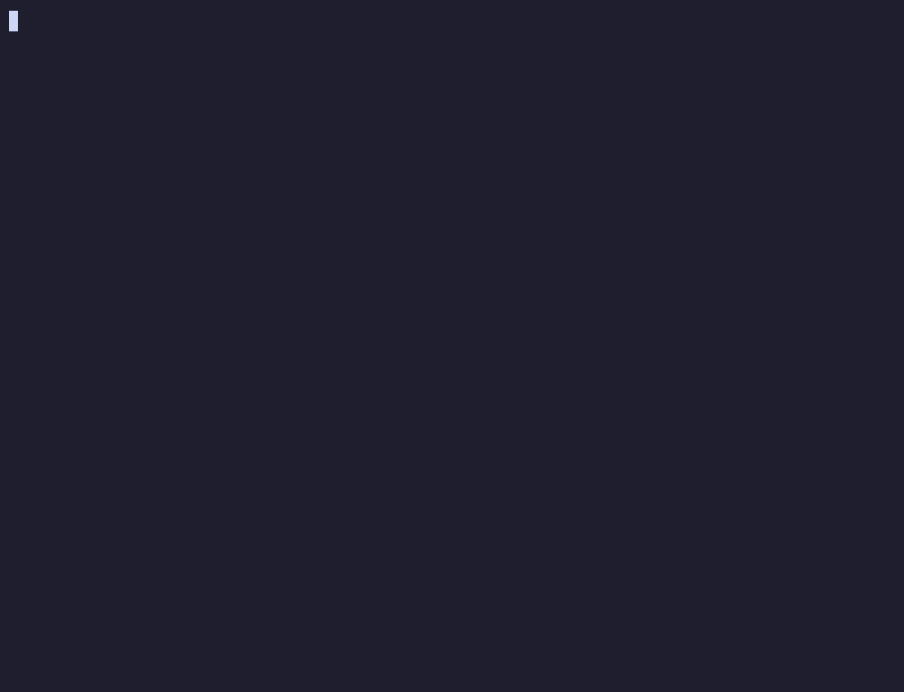
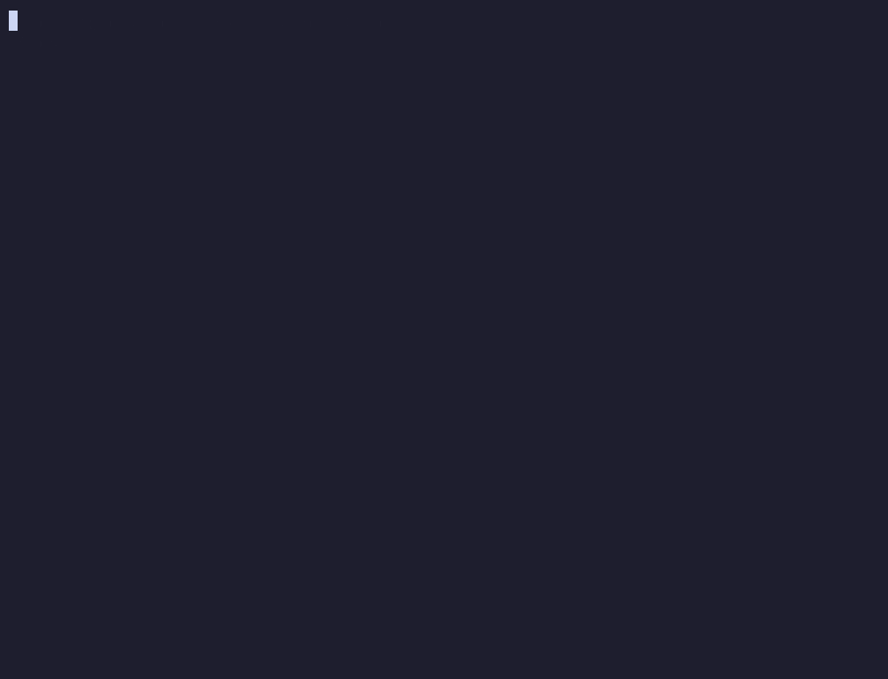

finitemonkey gate
What it does, recorded
real cli output · v0.1.0finitemonkey undo --list
finitemonkey trajectory
- blind: receives without criterion
- blind: receives with criterion
- unstable boundary
- proximal: detects without explaining
- proximal: judges and explains
- alone: redoes it in a known context
- alone: does it and transfers it
- ⊗ricochet
- ◉holds
finitemonkey planta saas

finitemonkey fronts board

The rest of the toolbox
all shipped in v0.1.0No commands to memorize
claude code hooksInstall
node 20+ · linux · macos · windows · wslIn the project folder:
npx finitemonkey init
/plugin marketplace add gabrielvieiraf/finitemonkey
/plugin install finitemonkey@finitemonkey